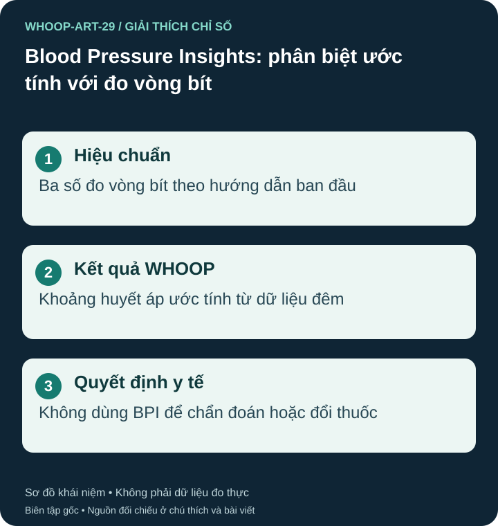

Huyết áp tâm thu và tâm trương là gì?
Số tâm thu mô tả áp lực khi tim co bóp; số tâm trương là áp lực giữa các nhịp. WHOOP mô tả Blood Pressure Insights, viết tắt BPI, là khoảng huyết áp ước tính từ dữ liệu lúc ngủ, hiển thị buổi sáng. Cùng đơn vị mmHg không khiến kết quả tương đương đo vòng bít tại một thời điểm. S45 S55

Điều kiện và hiệu chuẩn
Hướng dẫn WHOOP nêu MG với gói Life, từ 18 tuổi, hoàn thành câu hỏi và nhập ba số đo vòng bít để hiệu chuẩn ban đầu. Bài hướng dẫn ngày 24/06/2026 yêu cầu thêm số đo vòng bít mới mỗi 30 ngày. Làm theo nhắc trong ứng dụng; không hiểu “hiệu chuẩn một lần” là không bao giờ cần cập nhật nữa. S45 S55
Trang hỗ trợ còn nêu cần ít nhất năm giờ Time in Bed để sinh kết quả. Đây là thời gian trên giường theo bản ghi, không phải cam kết “ngủ đủ năm giờ là có số đo chính xác” hay khuyến nghị thời lượng ngủ. Mất kết quả không đồng nghĩa huyết áp bình thường. S45
Nhà sản xuất ghi tính năng không dành cho người mang thai hoặc đang dùng thuốc huyết áp; nếu tình trạng thay đổi, tạm ngừng dùng BPI và hỏi nhân viên y tế. Việc mở được tính năng không xác nhận phù hợp sử dụng cho mọi người. Không được tự ngừng thuốc để trở thành người đủ điều kiện. S45
Bối cảnh quản lý và giới hạn hiệu quả
FDA gửi thư cảnh báo về BPI ngày 14/07/2025. Sau khi sản phẩm và nhãn được sửa, thư ngày 17/06/2026 nêu FDA không dự định thực thi các yêu cầu thiết bị với BPI đã sửa theo chính sách general wellness. Thư này không phải quyết định cấp phép hoặc chứng nhận BPI dùng chẩn đoán tăng huyết áp; cũng không áp dụng mọi phiên bản hoặc thị trường. S53 S54
WHOOP công bố số liệu so sánh với vòng bít trong bài của hãng; các số đó không tự chứng minh khả năng theo dõi hoặc điều trị bệnh cho từng người. Không dùng BPI để chẩn đoán hay đổi thuốc. Ước tính qua đêm cũng không thay bản ghi huyết áp lưu động 24 giờ. S55 S45
Khi cần biết huyết áp thực tế
AHA khuyến nghị máy đo tự động bắp tay đã được thẩm định và vòng bít đúng cỡ. Tránh hút thuốc, caffeine và tập thể dục trong 30 phút trước đo; đi tiểu, ngồi nghỉ ít nhất năm phút, lưng được đỡ, chân đặt phẳng, tay ngang tim, đo trên da trần và không nói chuyện. Mỗi lần đo lấy hai số cách nhau ít nhất một phút hoặc theo kế hoạch chuyên môn. Mang bản ghi khi khám, không tự ngừng thuốc khi số đẹp. S46
Ví dụ, WHOOP và máy vòng bít khác nhau không phải lý do lấy trung bình hai phương pháp hoặc sửa thuốc để khớp ứng dụng. Kiểm tra thời điểm, kỹ thuật và hiệu chuẩn, rồi trao đổi khi cần. Màu trong ứng dụng không thay tiêu chuẩn chẩn đoán hoặc kế hoạch theo dõi cá nhân.
Đau ngực, khó thở, yếu liệt hoặc triệu chứng nặng cần trợ giúp khẩn cấp; không chờ sáng hôm sau để xem ước tính. Hướng dẫn nội dung này không thay kế hoạch theo dõi riêng của bác sĩ.
Nguồn tham khảo và phạm vi hỗ trợ
- S45 — WHOOP Support. WHOOP Life: Blood Pressure Insights. Phạm vi: WHOOP mô tả BPI là wellness: MG/Life, >=18 tuổi, dữ liệu đêm, 3 số đo vòng bít; không dành cho thai kỳ/người dùng thuốc huyết áp. Phân loại quản lý đối chiếu riêng với S53–S54.
- S46 — American Heart Association. Home Blood Pressure Monitoring. Phạm vi: Máy đo bắp tay được thẩm định, vòng bít đúng cỡ, nghỉ 5 phút, lặp sau 1 phút, không tự ngưng thuốc.
- S53 — U.S. Food and Drug Administration. WHOOP, Inc. — Warning Letter CMS 709755, July 14, 2025. Phạm vi: Bối cảnh thư cảnh báo BPI 2025; phải đọc cùng thư kết thúc xử lý 17/06/2026 cho sản phẩm đã sửa, không mô tả 2025 là trạng thái mới nhất.
- S54 — U.S. Food and Drug Administration. WHOOP, Inc. — Closeout Letter CMS 709755, June 17, 2026. Phạm vi: FDA nêu không dự định thực thi các yêu cầu thiết bị với BPI đã sửa đổi theo chính sách general wellness; thư không phải quyết định clearance/approval, không áp dụng mọi phiên bản hay tính năng khác.
- S55 — WHOOP. How Accurate is WHOOP Blood Pressure Insights?. Phạm vi: Bài 24/06/2026: khoảng ước tính từ đêm; hiệu chuẩn bằng 3 số đo vòng bít; thêm số đo mới mỗi 30 ngày. Số liệu độ chính xác là báo cáo của hãng, không tự chứng minh đủ để chẩn đoán.
Bài biên soạn độc lập bởi Pulse & Vitality; tài liệu WHOOP và các nguồn khác được dùng để tham khảo. Đăng ngày 2026-10-27; nguồn đối chiếu 2026-10-26. Nội dung giáo dục, không thay thế đánh giá, chẩn đoán hoặc điều trị y tế.